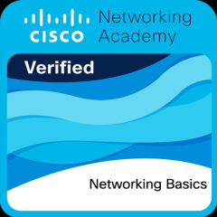
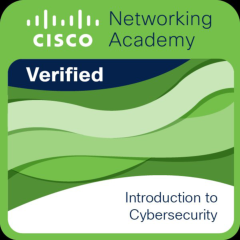

Scanner de ports en Python
EFREI, 2e année
Un scanner qui teste les ports ouverts d'une machine en parallèle (sockets, multithreading) et produit un rapport au format JSON.
Clément Berton2e année, Bachelor Ingénierie & Cybersécurité, EFREI
Analyste cybersécurité junior. J'ai déjà audité une application industrielle en stage chez SPIE ICS et résolu 4 challenges sur 5 au CTF CyberNight.
Clin d'œil à Nmap, l'outil de scan réseau que j'utilise en audit. Chaque ligne est un lien.
Deux périodes en entreprise, dans le cadre de mon Bachelor à l'EFREI.
Dès septembre 2027
Du 28 avril au 18 juin 2027
Deux stages, du plus récent au plus ancien.
SPIE ICS
Le détail des failles trouvées reste confidentiel : il appartient au client.
Cisco France
Une compétition de sécurité organisée par CTFREI, l'association cyber de l'EFREI. Ouvrez un challenge pour voir le problème, ma démarche et ce que j'en retiens. Les flags ne sont pas affichés.
4 challenges résolus sur 5, en web, système et OSINT.
Un mini-jeu web envoie le contenu d'un champ de formulaire au serveur. Il faut récupérer une donnée cachée dans la base.
Une simple apostrophe déclenche une erreur SQLite : la saisie est insérée telle quelle dans la requête. J'ai compté les colonnes avec UNION SELECT, listé les tables via sqlite_master, puis lu la table cachée secrets.
Un message de refus ne prouve pas qu'un filtre existe : ici la requête renvoyait juste zéro ligne. Il faut lire la réponse brute du serveur, pas seulement l'interface.
Sur un serveur en SSH, une bibliothèque C donne accès au compte root si on lui fournit le bon mot de passe. Ce mot de passe n'est écrit dans aucune page de manuel affichée.
Une page de manuel indiquait qu'elle « en sait plus qu'elle n'en affiche ». J'ai lu son fichier source compressé avec man -w et zcat : le mot de passe était dans un commentaire masqué. J'ai ensuite écrit un petit programme C lié à la bibliothèque.
Ce qu'on voit à l'écran n'est pas toujours le contenu réel d'un fichier. Lire la source brute fait partie de la recherche.
Retrouver le nom complet de la personne représentée sur une fresque de street art, à partir d'indices sur deux commerces d'un village italien.
Les deux commerces se trouvent sur la même place de Spongano, dans les Pouilles. J'ai retrouvé la fresque de l'artiste, puis son sujet : l'écrivaine Grazia Deledda, prix Nobel de littérature 1926.
Croiser plusieurs indices permet de situer un lieu précisément. Le format du flag demandait le nom complet, pas le nom d'usage.
Une seule photo, prise depuis le salon d'une maison à vendre. Il faut trouver la référence cadastrale de la parcelle.
Une recherche d'image inversée m'a mené à l'annonce, à Agen, avec un terrain de 354 m². J'ai téléchargé le cadastre ouvert de la commune et filtré les parcelles par surface en Python : 10 sur 12 319. Une seule était sur les bons coteaux, ce que j'ai confirmé sur la photo aérienne de l'IGN.
Les données publiques (open data) permettent de passer d'une photo à une adresse exacte. C'est aussi ce que ferait un attaquant.
Retrouver la photo d'un « intrus » prise à un concert, la chanson jouée à ce moment-là et le bloc où il était assis.
J'ai identifié le Stade de France et le concert de System of a Down, calculé la chanson à 21h23 avec les setlists et la durée des morceaux, et comparé les vues des blocs dans le visualiseur 3D officiel du stade.
Il reste 6 combinaisons possibles. La date exacte du post d'origine permettrait de trancher entre les deux soirs.
Projets d'école en cybersécurité, puis projets plus anciens qui montrent comment je travaille.
EFREI, 2e année
Un scanner qui teste les ports ouverts d'une machine en parallèle (sockets, multithreading) et produit un rapport au format JSON.
EFREI, 2e année, équipe de 4
Un site e-commerce en Flask et SQLite construit avec des failles, pour s'entraîner à les exploiter et à les corriger. Ma partie : l'injection SQL.
Décembre 2024, avec l'ISEP et Aldebaran
Un algorithme d'IA pour aider les élèves en difficulté, développé en une semaine et présenté devant un jury et un large public.
Projet de terminale STI2D
Un panneau qui suit le soleil tout seul : capteurs de lumière, servomoteurs et programme en C++ sur Arduino.
Projet personnel
Modélisation 3D avec Blender, scripts en C++ et création de mods pour des jeux existants.
Projets personnels
Maquettes en atelier (découpe laser, impression 3D, soudure), montage de PC et circuits Arduino.
Cliquez sur une compétence pour voir où je l'ai réellement utilisée.
Du plus récent au plus ancien.
EFREI, Villejuif, 2025 – 2028 (en 2e année)
La Salle Saint-Nicolas, Issy-les-Moulineaux, 2025


Saxophone depuis 10 ans, dans plusieurs orchestres : concerts devant le public et travail en groupe.
Vous recrutez un alternant ou un stagiaire en cybersécurité ? Écrivez-moi par e-mail ou sur LinkedIn.